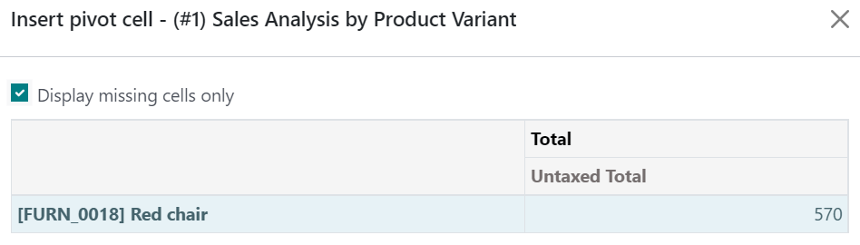

Vincular datos de Odoo¶
Puede insertar y vincular varios elementos desde su base de datos a sus hojas de cálculo, específicamente:
tablas dinámicas,
gráficos,
listas, y
vínculos a menús (un enlace para ver un modelo específico)
Antes de insertar tablas dinámicas, gráficos, o listas, asegúrese de que están ajustados a sus necesidades, pues algunos elementos se configuran más rápido - o solo lo hacen - desde su respectiva vista.
Para insertar tablas dinámicas y gráficos, haga clic en Insertar en hoja de cálculo desde cualquier vista de tabla dinámica o de gráfico.
Para insertar listas, haga clic en desde cualquier vista de lista.
Para insertar enlaces a menús, haga clic en desde cualquier vista.
En la casilla emergente, cree una nueva hoja de cálculo seleccionando Hoja de cálculo en blanco o inserte una existente seleccionándola y haciendo clic en Confirmar.

Nota
De manera predeterminada, las hojas de cálculo nuevas se guardan en el espacio de trabajo Hoja de cálculo de la aplicación Documentos.
Actualizar datos¶
Una vez insertados en la hoja de cálculo, sus datos se mantendrán actualizados, reflejando cualquier cambio que se haga en su base de datos. Reabrir la hoja de cálculo vuelve a cargar los datos vinculados.
Nota
Para actualizar los datos de las tablas dinámicas y listas sin volver a abrir la hoja de cálculo, vaya a la barra de menús y haga clic en .
Datos de la tabla dinámica¶
Usar Actualizar todos los datos solo actualiza las celdas de las tablas dinámicas existentes. Si se agregan nuevas celdas, vaya a la barra de menús y haga clic en para actualizar por completo la tabla. Otra manera sería hacer clic en Insertar tabla dinámica, seleccionar la tabla y seleccionar la casilla Mostrar solo las celdas faltantes para visualizar los datos faltantes.

Para cambiar qué registro usa la tabla dinámica, haga clic derecho en la celda de la tabla, seleccione Ver propiedades de la tabla dinámica, y haga clic en Editar dominio.